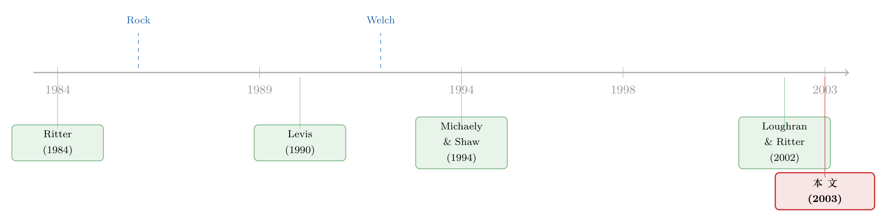

12% 的「免费午餐」，为什么端到你面前就凉了？
本文读的是 Amihud, Hauser & Kirsh (2003, JFE)：他们用特拉维夫交易所「按比例平均配售」这条独特规则，把一个无法在美国回答的老问题问到了底——新股平均 12% 的首日正收益，看着像免费的钱，可一旦按你真正能拿到的份额加权，散户的「配售加权收益」其实是 −1.18%。逆向选择不仅存在，还过了头；但只要用一点公开信息「挑一挑」，散户又能把它拉回零。顺带，他们还在配售率的分布里看到了 Welch (1992) 的信息瀑布。
1 一桌看得见、却夹不到嘴里的菜
先说一个几乎人人都知道的「事实」：新股是被低价发行（underpriced）的。Loughran、Ritter 和 Rydqvist (1994) 跑遍了一长串国家，结论惊人地一致——挂牌头几天，新股平均给你一个正收益。本文的样本里，这个数字是 11.99%（t = 7.20），而且三分之二（66.6%）的新股首日是涨的。
于是一个再自然不过的念头冒了出来：那我每只新股都申购，不就坐着收 12% 了吗？
这正是问题的张力所在。Rock (1986) 早就泼了一盆冷水：这 12% 你夹不到嘴里。理由是逆向选择（adverse selection），俗称「赢家的诅咒」（winner's curse）——市场上有一批比你懂行的「知情者」（informed investors），他们只盯着真正被低估的好新股下单。结果就是：越是好的（被低估的）新股，知情者蜂拥而入，你这个「不知情者」（uninformed investor）能分到的份额越小；越是差的（被高估的）新股，知情者躲得远远的，没人跟你抢，你反而被塞了一大把。
Rock 的原话是：把各只新股的收益「按拿到配售的概率加权后，不知情投资者应当只能赚到无风险利率」。换句话说，看得见的 12% 是给「平均一股」的，而你真正能攥在手里的那部分，是被系统性地从好菜里抽走、往坏菜里塞满的。
接着，一个尖锐的问题是：这个故事到底是真的，还是经济学家自圆其说的漂亮话？要证伪它，你得知道每个申购者下了多少单、又真正分到了多少。 偏偏在美国，这数据根本不存在——配售完全由承销商「相机裁量」（discretion），同一只新股，张三能拿满、李四颗粒无收，外人无从复盘。Michaely 和 Shaw (1994) 只能拐着弯、假设「机构更知情」来间接检验；Aggrawal、Prabhala 和 Puri (2002) 拿到的也只是「整只新股里分给机构 vs. 散户的比例」，而不是「每个申购者的订单被填了几成」。
于是真正关键的一步，是去找一个配售规则写死在制度里、不由人裁量的市场。本文找到的，就是特拉维夫证券交易所（Tel Aviv Stock Exchange, TASE）。
2 识别策略：一台能「模拟蠢人」的机器
为什么 TASE 是个干净的实验室？因为在 1989 年 11 月到 1993 年 11 月这段时间里，它的配售规则机械到近乎枯燥：超额认购时，所有申购者按同一比例平均分配（equal proration），每个人都按自己订单的同一个分数被填单，且这个配售率在当天 IPO 结束时公开宣布。没有路演，没有簿记建档（bookbuilding），没有承销商的偏心。
这一条，把别的国家都搞砸了的检验救活了。Koh 和 Walter (1989, 新加坡)、Levis (1990, 英国)、Keloharju (1993, 芬兰) 都试过测 Rock，但那些市场里配售是订单大小的复杂函数、方法（抽签 vs. 配额）还常常事后才定，甚至芬兰允许在认购满额后随时停止接单——你根本没法「模拟」一个固定策略的不知情者。TASE 没有这些毛病。
于是作者造了一台「模拟蠢人」的机器。设想一个最朴素的不知情者：每一只新股都申购固定金额，申购价就取固定发行价，或拍卖时取上限价（这样能保证他在每只新股里都分到货）。他真正赚到的，是「首日收益乘以他能拿到的配售率，再扣掉一天的资金占用利息」。这就是全文的枢纽变量——配售加权初始收益（allocation-weighted initial return, AWIR）：
这里的首日收益不是简单的涨跌幅，而是剔除了市场的超额收益。作者把观察点放在 IPO 后第 6 天（因为新股里常打包了认股权证和债券，要等它们都开始交易），并用 TASE 的小盘股 Karam 指数做基准：
$$\mathit{IR}_j = P_{j,6}/P_{j,0} - M_{j,6}/M_{j,0}$$
其中 \(P_{j,0}\) 是发行价，\(P_{j,6}\) 是第 6 天单位证券（unit）各成分的市价之和，\(M_{j,t}\) 是对应的 Karam 指数。
有了这台机器，Rock 的理论就被拆成了两个可以直接验的断言：
- 断言一（逆向选择是否存在）：被高估的新股，配售率
ALLOC是不是更高？ - 断言二（不知情者是否只赚无风险利率）：把所有新股的收益按配售率加权，
AWIR是不是约等于零？
3 数据与那条「U 形」的配售曲线
样本是 284 只 TASE 新股。其中 84.6% 发的是「单位」（unit）——股票搭着权证或（多为可转）债券打包卖，上市后再拆开。86% 的新股用拍卖（auction）发行，但其中 77% 最后收在了上限价，等于变相的固定价发行，所以还是要按比例配售。
先看两张「形状」就很说明问题的分布。首日收益 IR 右偏，少数新股收益奇高（最高 1.77），把均值拉到了 12%。但更扎眼的是配售率 ALLOC 的分布：它呈一个极端的、向左偏的 U 形——均值 0.360，可中位数低到 0.048。也就是说，多数新股因为被疯狂超额认购，你只能分到订单的百分之几；而大约四分之一的新股则干脆认购不足，配售率直接等于 1.0（卖不掉的部分承销商自己吞下）。中间地带几乎是空的。
这条 U 形曲线本身就是一份证据——但它对应的不是 Rock，而是 Welch (1992)。我们把它留到后面。
4 主要结果：逆向选择不仅真，而且过了头
先看断言一。 把样本按首日收益正负切开，对比触目惊心：
- 被高估的新股（
IR < 0，95 只）：平均配售率ALLOC = 0.6134，中位数高达0.92； - 被低估的新股（
IR > 0，189 只）：平均配售率ALLOC = 0.2319，中位数只有0.0127。
一句话：越是好新股，你越分不到；越是烂新股，越是塞你一手。 这正是赢家的诅咒，铁证如山。
再看断言二，也是全文最反直觉的一击。 把收益按配售率加权之后，那个 12% 的「免费午餐」会塌成什么样？答案是——它不只塌到零，还塌穿了：
AWIR = −0.0118（t = 1.77）；- 拉长到 15 天，
AWIR15 = −0.0177（t = 2.41）； - 拉长到 150 天，
AWIR150 = −0.0243（t = 1.52）。
不知情者非但没赚到无风险利率，反而是小幅亏损的。换句话说，对这个最朴素的散户来说，新股平均是略微高估的——逆向选择的力道比 Rock 的「恰好赚到无风险利率」还要再狠一点。看得见的 12%，端到他面前已经凉透。
别误读这个负号。它不是说新股「整体」被高估了——「平均一股」的确赚 12%。它说的是：当你只能按那条 U 形曲线分到货，好处早被知情者和「满额配售」的烂新股一起抽干了。收益是给一股的，配售率才是给你的。
那这是不是意味着散户在 TASE 注定挨宰？这里出现了一个温和的反转。作者指出，一个「最低限度用信息」（minimal information conditioning）的散户——他依旧不懂任何单家公司的基本面，但会看公开信息挑时机，比如近期大盘表现、别人申购的踊跃程度——就能把成绩从负数拉回到零附近。也就是说，赢家的诅咒能用最廉价的公共信息部分对冲掉。Rock 的「赚无风险利率」不是天然达成的，而是要稍微动点脑子才够得着的下限。
5 配售率里的「随大流」：Welch 的信息瀑布
回到那条 U 形曲线。为什么需求要么挤爆、要么冷场，几乎没有中间态？
这就是本文检验的第二个理论：Welch (1992) 的信息瀑布（information cascades），也就是「随大流」（herding）。每个投资者心里对新股价值有个先验，看到发行价、又看到别人是申购还是观望之后修正信念再做决定。可一旦「别人的决定」开始主导「我的决定」，群体就会一窝蜂地涌入或集体回避——结果必然是极端超额认购或认购不足，中间地带被掏空。发行人为了点起这把火，就有动机把价格定低，制造一个买家的瀑布。ALLOC 那个左偏的 U 形分布，正是这套机制留在数据上的指纹。
（关于「跟风」到底是真随大流还是各自独立行动，可参见《羊群是真的吗？——把「机构跟风」拆成跟自己和跟别人》。）
6 那承销商到底「故意」压价了没有？
还有一个漂亮的副产品。作者把首日收益 IR 和配售率（取对数几率变换后的 ALLOCT）一起对一组公开变量做回归：
$$\mathit{ALLOCT}_j = \log\!\big[(\mathit{ALLOC}+a)/(1-\mathit{ALLOC}+a)\big],\quad a = 0.5/284$$
解释变量里有两个最关键的市场回报。一个是定价之后到挂牌之间的大盘回报 RM1-6（发行价在第 −6 天就定死，之后五天的行情理应影响需求）；另一个是定价之前的大盘回报 RM6-16：
$$\mathit{RM6\text{-}16}_j = M_{j,-6}/M_{j,-16} - 1$$
逻辑很巧：如果承销商真的把定价前的所有信息都吃进了发行价，那 RM6-16 就不该再影响首日收益或需求。可结果是，RM6-16 在两个方程里都显著。这意味着承销商是揣着定价前就已知的信息、却故意把新股定低了。
更妙的是一对镜像：那些推高低价发行的因素，同时推高了超额需求、压低了配售率——两个方程里系数符号正好相反。换句话说，低价发行的幅度超过了「招来足够需求」所需的程度。压价不是被动地为了凑够认购，而是主动地多让了一块。这一发现，和 Loughran 与 Ritter (2002) 在美国看到的「部分调整」（partial adjustment）遥相呼应——只不过 TASE 因为承销商无权分配股份，干净地排除了美国那套「压价讨好买方客户、再收回扣」的代理解释。
TASE 的制度顺手关掉了美国低价发行的另外两扇门：一是上市后不允许承销商做价格支持（price support），所以负收益没法被人为托住（对照 Hanley、Kumar、Seguin, 1993）；二是配售按比例、承销商无裁量权，所以 Loughran-Ritter 的代理故事在这里讲不通。可低价发行照样发生——这让逆向选择和瀑布两套机制显得格外干净。
7 文献脉络
把这条线捋一捋。最早的母题是为什么新股会被低价发行：Ritter (1984) 记录了 1980 年的「热市」（hot issue market），Beatty 和 Ritter (1986) 把不确定性和低价发行的幅度联系起来。真正给出「赢家诅咒」这套逆向选择骨架的，是 Rock (1986)——但它有个先天缺陷：需要配售概率的数据，而美国没有。
于是后来的人分两路走。一路是间接检验：Michaely 和 Shaw (1994) 假设机构更知情，Aggrawal-Prabhala-Puri (2002) 用机构 vs. 散户的配售比例。另一路是去有配售数据的国家：Koh 和 Walter (1989)、Levis (1990)、Keloharju (1993) 分别在新加坡、英国、芬兰试过，但结论彼此打架，原因正是那些市场的配售规则太脏。与此并行的，是 Welch (1992) 给出的瀑布/随大流理论，和 Loughran-Ritter (2002) 的代理视角。

本文的位置，就在这两路的交汇点上：它用 TASE「平均按比例配售 + 当日公开配售率 + 可模拟固定策略」的独特制度，第一次直接、干净地把 Rock 的两个断言和 Welch 的瀑布同时验了一遍。它的贡献不在提出新理论，而在找到了一个让老理论第一次能被正面拷问的场景。
（顺带一提，新股「到底是打折卖还是溢价卖」「定价过程有没有效率」这些争论，本博客另有专文：《新股到底是「打折」卖，还是「溢价」卖？》、《新股定价，到底「有没有效率」？》；而「超额认购排长队、却仍被高估」这个反直觉现象，在中国债市也有回响，见《在中国发债，为什么「卖贵了」反而排着长队？》。）
8 评论与延伸（Q&A + 研究方向）
(a) 几个可能的疑问
Q：均值收益 +12%、加权收益 −1.18%，这两个数字矛盾吗？
不矛盾，反而是全文的精华。+12% 是给「随便一股」的无条件平均；−1.18% 是给「你按那条 U 形曲线真正分到的份额」的加权平均。配售率与收益负相关（好新股分得少、烂新股分得多），加权一上去，正收益就被系统性地稀释甚至反超。两个数字之差，恰好量出了赢家诅咒的力道。
Q：把观察窗口放在第 6 天，而不是第 1 天，会不会是在「挑」结果？
这是制度逼出来的，不是挑出来的：新股是「单位」打包发行，权证和债券要晚两三天才开始交易，第 6 天才有完整的单位价格。作者也做了稳健性——第 6 天到第 150 天的收益均值仅 2.95%（
t = 1.10，不显著），且首日收益与后续收益相关系数只有 −0.028，说明市场在 IPO 后很快就有效定价，没有动量、也没有过度反应后的反转。窗口选择不像在驱动结论。
Q：那个「最低限度用信息」的散户能拉回零，是不是有点事后诸葛、数据挖掘？
这是本文相对最软的一环。作者强调他用的是 IPO 之前就公开的信息（近期大盘、他人申购热度），原则上可实时操作，不是事后开天眼。但「条件化」的具体设定有自由度，存在一定的过拟合空间——把它当成「下限可达」的存在性证明，比当成一个可照搬的交易策略更稳妥。
Q：拍卖里 77% 收在上限价，这会不会污染识别？
反而强化了识别。收在上限价意味着拍卖退化成固定价发行、必须按比例配售，正是模拟蠢人所需要的机制；作者还专门设了
AUCTION哑变量来区分两种发行方式。少数（1.4%，4 只）配售随订单量递减的特例被单独处理，剔除后结论不变。
Q：TASE 是个小盘、薄交易的市场，结论能外推到美国吗？
要小心。正因为美国没有配售数据，本文的「直接检验」在美国根本做不了，所以它的价值首先是机制证据而非外部有效性。Karam 是小盘股的逐日竞价市场，价格更噪、调整更慢，作者也因此把基准选成 Karam 指数。逆向选择和瀑布这两套机制大概率有普适性，但具体量级（−1.18%）高度依赖 TASE 的制度细节。
Q：为什么承销商「故意多压价」？这对发行人不是亏吗？
本文记录了这个事实（
RM6-16在两个方程都显著、且压价超过招来需求所需），但没有给出动机的结构性解释。它干净地排除了美国式的「承销商裁量—回扣」代理故事（TASE 承销商无配售权），却也因此把「为何仍要多让一块」留成了开放问题——这正是它最值得追问的地方。
(b) 几个可能的研究问题与提案
1. 把「AWIR 机器」搬到公司债的簿记建档里
- 【经济故事】公司债一级市场同样存在超额认购与配售裁量，投资者也分「知情/不知情」。如果能拿到逐笔订单与最终获配比例，就能复刻本文的配售加权收益，检验信用债的「新债折价」（参见《新债上市第一笔成交，凭什么白赚 47 个基点？》）到底有多少能被散户/小机构真正赚到。
- 【可行性】中。机制清楚、方法成熟，瓶颈在数据：承销商的逐笔配售明细极难获取，多数市场不公开。若能接触到某家承销行的内部簿记或某个强制披露的市场（如部分欧洲/亚洲监管要求），则 doable。
2. 外资 vs. 本地申购者：谁是「知情者」？
- 【经济故事】Rock 模型里「知情/不知情」的身份是隐性的。若在一个新股市场里能按投资者国别拆分订单与获配，就能直接检验「外资是不是被诅咒的那一方」，把逆向选择和外资信息劣势的争论接起来（对照《外资真有「信息劣势」吗？——首尔交易簿里那 37 个基点的真相》）。
- 【可行性】中低。需要带投资者类型标签的逐笔申购数据，类似首尔交易簿那种监管级数据；在多数市场不可得，但在韩国/台湾等有账户级数据的市场可能 doable。
3. 配售率分布的「U 形度」能否预测后市流动性？
- 【经济故事】U 形越极端，说明瀑布越强、信念越同质化。同质化的持有人结构往往意味着上市后更容易同向交易、流动性更脆。可把发行时的配售率分布形状当作一个事前变量，预测新股后续的流动性与波动（呼应《打折卖新股，是为了补偿你「将来不好脱手」的那份担心》）。
- 【可行性】高。只要有公开的配售率（TASE 这类市场就有）和上市后的逐日量价数据，构造「分布形状」指标并做横截面回归即可，不需要逐笔订单。是三个里最容易上手的。
4. 制度变革作为断点：1993 年底 TASE 强制拍卖之后
- 【经济故事】正文提到 1993 年 12 月起 TASE 改为「无上限拍卖」。这是一个天然的制度断点——配售机制一变，逆向选择与瀑布的强度应当随之变化。可用变革前后做一次准自然实验，看
AWIR与配售分布的 U 形度是否被熨平。 - 【可行性】中。识别思路干净（Kandel、Sarig、Wohl, 1999 已研究过这次改革），难点在于跨制度可比的配售/收益数据是否延续可得；若数据接得上，是个漂亮的断点设计。
我的判断
这是一篇「制度选得好，问题就解决了一半」的范例。它最大的贡献不是任何一个系数，而是找到了一个让 Rock (1986) 第一次能被正面证伪的场景——平均按比例配售 + 当日公开配售率，把美国永远缺失的那块数据补上了。由此得到的 −1.18% 配售加权收益，是对「新股有免费午餐」这个流行直觉的一记干净的反驳：收益是给一股的，配售率才是给你的。
对识别，我有两点保留。其一，「最低限度用信息」能把收益拉回零，这个练习的设定有自由度，更像存在性证明而非可复制的策略，文中也坦承了这点。其二，所有量级都深嵌在 TASE 的小盘、薄交易、单位打包发行的制度土壤里，Karam 市场的噪声与缓慢调整可能放大或扭曲首日收益的测量——外推到簿记建档主导的现代市场要格外谨慎。
后续我最想看到的，是把这台「配售加权」机器接到带投资者类型标签的逐笔数据上：当我们不再用「机构 = 知情」这种代理，而是直接看是谁分到了好新股、谁被塞了烂新股，赢家的诅咒到底落在了哪一类人头上。那将是把 Rock 从「机制存在」推进到「身份可识别」的一步。
参考文献
Aggrawal, R., Prabhala, N. R., Puri, M. (2002). Institutional allocation in initial public offerings: Empirical evidence. Journal of Finance, forthcoming.
Beatty, R. P., Ritter, J. R. (1986). Investment banking, reputation, and the underpricing of initial public offerings. Journal of Financial Economics 15, 213–232.
Kandel, S., Sarig, O., Wohl, A. (1999). The demand for stocks: An analysis of IPO auctions. Review of Financial Studies 12, 227–247.
Keloharju, M. (1993). The winner's curse, legal liability, and the long-term price performance of initial public offerings in Finland. Journal of Financial Economics 34, 251–277.
Koh, F., Walter, T. (1989). A direct test of Rock's model of the pricing of unseasoned issues. Journal of Financial Economics 23, 251–272.
Levis, M. (1990). The winner's curse problem, interest costs and the underpricing of initial public offerings. Economic Journal 100, 76–89.
Loughran, T., Ritter, J. R. (2002). Why don't issuers get upset about leaving money on the table in IPOs? Review of Financial Studies 15, 413–443.
Loughran, T., Ritter, J. R., Rydqvist, K. (1994). Initial public offerings: International insights. Pacific-Basin Finance Journal 2, 165–199.
Michaely, R., Shaw, W. (1994). The pricing of initial public offerings: Tests of adverse selection and signaling theories. Review of Financial Studies 7, 279–317.
Ritter, J. R. (1984). The "hot issue" market of 1980. Journal of Business 57, 215–240.
Rock, K. (1986). Why new issues are underpriced? Journal of Financial Economics 15, 187–212.
Welch, I. (1992). Sequential sales, learning, and cascades. Journal of Finance 47, 695–732.